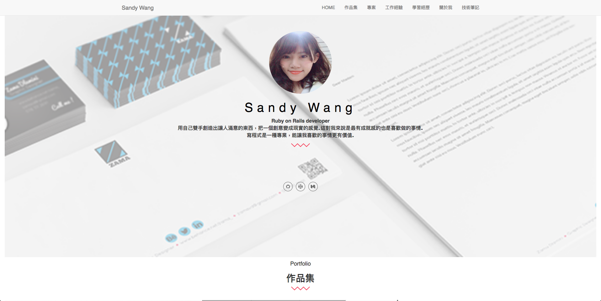
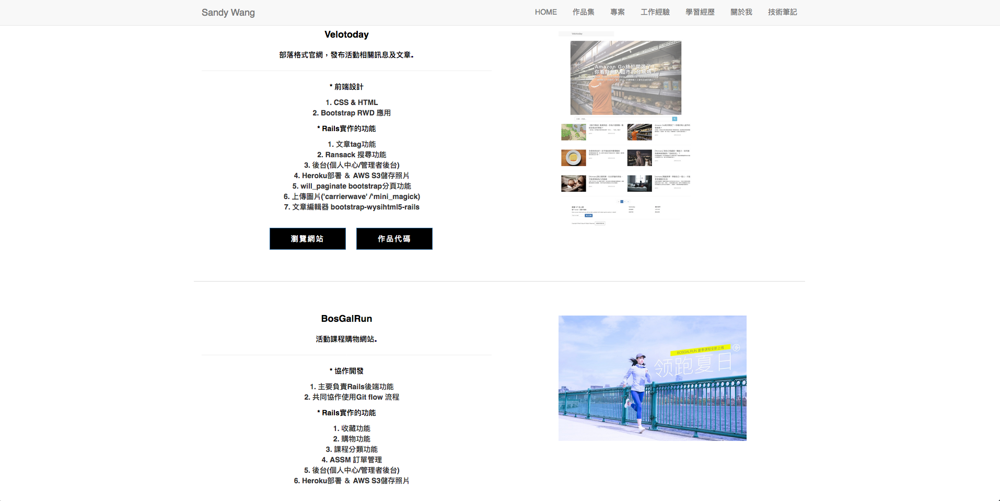
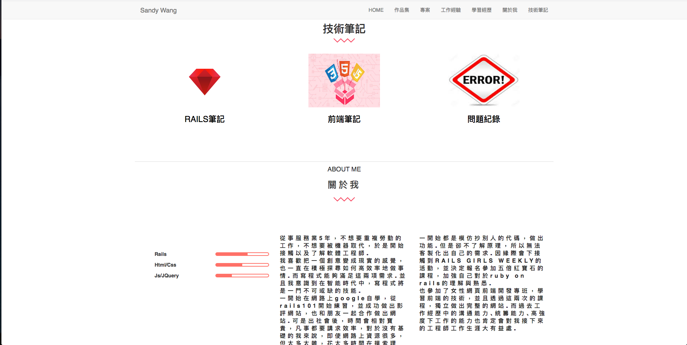

「在飯店上班時，看到外籍的工程師坐在吧台寫程式、遠端工作，當時就在想，我是否有一天也可以做得到？」
我是一個後端工程師，在成為後端工程師之前，我做的是 bartender，在服務業待了接近六年的時間。
有些人會說：「你應該大學就是資訊相關科系吧～」其實，我大學原本唸的是德文，甚至因為家庭因素，大一唸完就休學去工作；後來下定決心轉職後，從初次接觸程式，到找到工作，前後大約是一年的時間。
轉職之前，我在飯店業工作了滿長一段時間，
那時候看主管們的生活就大概可以想像未來的發展，如果一直留在飯店做服務業，薪水很容易遇到天花板限制，即使做到主管階級，也是長時間被綁在飯店，甚至得住在飯店。
就覺得這不是我想要的，我理想的工作是能夠有自己時間能夠陪陪家人，做想做的事。
曾經跟家人、朋友討論過類似的想法，回饋大概是都是：
「你現在的工作不錯呀，五星級飯店欸，多少人想進去呀」
「那個 xxx 的女兒以前也是跟你一樣，熬過來以後薪水也是…」
「轉職成功的都是特例，你不能把特例作為自己的人生規劃…」
開始起步學寫程式時的想法很簡單：
我覺得「所有公司都需要網站」，所以就先從網站開發開始學起。
當時新創創業的風潮很盛行，技術的部分蠻多是採用可以快速開發的 Rails。
加上自己很嚮往在新創上班，又聽說會 Rails 的人很少，就選擇 Rails 做主力學習的目標。
最初在 Udemy 上面找了很多免費課程，但學起來散散的，很沒有系統。
例如：
叫你「把程式碼複製貼上」，貼一次、貼兩次，第三次自己手寫看看。原本跟著教材跑覺得很有趣，這樣拼拼湊湊竟然真的就做出了一個煞有其事的網站。但學到後面，發現自己只會套課程的模板、框架，對程式語言的特性和邏輯完全搞不清楚，沒有能力自己開發出想要的功能。當時真的超崩潰，心裡一直想「我的網頁會動，但我不知道為什麼！」甚至開始覺得自己可能真的不適合走程式這行吧 ⋯⋯
在網路上找技術文章的時候，有找到五倍紅寶石的高見龍（龍哥）在 iT 邦幫忙寫的 Rails 系列文。覺得寫得很清楚，蠻多疑惑有被解開，看他的文章才知道有五倍這個教育機構。後來發現他有開實體的基礎課程，抱著有點去見偶像的心情參加。我印象很深的是那次參加的課程，龍哥講到一句話突破了我的學習盲點：
「要知道程式如何思考，怎麼用程式思考的方式去寫程式、看程式。」
那天還重新聽了一次基本的 function、變數等等的概念。把許多之前上過課不懂的地方都連結起來，整個豁然開朗，後來也報名了他們的完整課程。
總之，他們的課對有程式底子的人來說怎麼樣我不知道，但我自己覺得對曾經自學卻卡住遇到瓶頸的人來說，非常有幫助！
轉職規劃
參加完課程後，我原先打算給自己一年的時間，花半年累積一些作品集，半年找工作。當時去上實體課程是 2017 年 10 月的事，因為自己是一邊學習、一邊還有工作，所以有想把戰線拉長一點。
可能是我當初問問題問得特別勤吧，老師們對我都蠻有印象的。課程結業沒多久，在 2017 年 12 月的時候，就受老師們的引薦，獲得了人生中第一個工程師職缺的面試機會，很幸運的，也在 2018 年 2 月的時候確定拿到 offer、3 月到新公司上班！
「當初預計會花一年的時間，最後從開始上課到拿到工作，只花了半年，順利從 bartender 轉職軟體工程師！（笑）」
而這一切會過的這麼順暢，主要原因有以下幾點：
1. 實務專案
許多跟我一樣半路出家的朋友，在轉職的路上走得不夠順的原因，就是他們沒有經歷過「真正的專案開發」。這就好像一個廚師他研究過很多食譜、知道每個規則，但從來沒有自己煮過菜一樣，這樣的工程師是很難找到工作的。仿間很多程式教育機構，雖然有協助工程師做專案，但是沒有業界的工程師協助「review」，對於品質與工作流程上，水準與業界的工程師還是有落差。
2. 作品集
強烈建議要花時間好好整理自己的「作品集」與個人頁面！

這是我當時求職的作品集，包含過去的作品、專案、和工作經驗（跟程式設計不相關，所以著墨的很少，基本上只寫單位、職位、期間）

專案的部分，我把我負責的部分、有什麼功能，用 HR 也看得懂的方式表達

面試的時候，因為自己不是本科系而且跳很大，很多面試官都會問「動機」，因此我也獨立整理出來
根據以上這兩個點，五倍紅寶石近期有專門為了這兩個點，設計了全新的線下課程，可以參考。
最後想跟大家講分享一些我自己經歷學習到轉職這段時間後的體悟：
很幸運的，我在開始求職後的三個月找到工作，但同時，這樣的幸運來自於我全心投入轉職的準備與程式學習。
老實說，我覺得其實要轉職成功是真的很辛苦的，從準備成為工程師，到成為工程師，是充滿荊棘的一條路。
網路上許多轉職文章寫的感覺很輕鬆，但只是沒有把累的那一面寫出來。
可能蠻多人的想法是：現在工作薪水太低，想轉工程師得到好起薪，但「工程師」這條職涯選項，是必須一直不停學習的，否則技術推陳出新，真的會跟不上。
如果妳還卡在猶豫要不要轉職的階段，建議妳可以先從免費的課程開始，不論什麼語言，或是前後端。先跟著課程實作點東西出來，才知道自己是否可以接受寫程式。
也可以參加一些社群聚會，例如 默默會 ，來這邊跟五倍的同仁詢問。
寫程式這件事，挫折感和成就感幾乎是一樣大的，想不出來時的挫折很大，但做出來的時候成就感也一樣大。
對真的想要轉職的人來說，重要的是要能禁得起挫折失敗。這段路上，一定是經過無數次的失敗，才終於把版排好、把功能寫出來。
就拿 Rails 當例子，有稍微接觸過 Rails 的朋友應該都一樣，最一開始讓人感到挫折的，就是陰魂不散的紅畫面！像我就不是很有耐心的人，每次看到都覺得很心煩 XD
但是該說幸好這個語言夠體貼嗎？反正 Rails 出錯的原因都會寫在畫面上，靜下心慢慢看，就能找出錯在哪裡。
真正的難關是「如何實作一個想要的功能出來」，這就攸關到你對語言原理的認識，以及如何操作、思考的流程。
以上都是比較辛苦面的說法啦，當然學程式寫程式，一定也是有快樂的地方。對我來說最快樂的時候，就是我順利解決一個又一個的 bug 的時候。還有看到網站上線的成就感，真的會覺得「啊～苦盡甘來！」
最後，總結以上：
- 轉職是辛苦的，但結果是甜美的（以我自身的例子）
- 專案一定要給業界工程師「review」過，才能從中獲得扎實的成長，縮短所學與業界的落差
- 來 默默會 找已經在業界工作的人聊聊、與五倍紅寶石的課程團隊聊聊，或許會有不同的想法
- 最近看到他們有在辦說明會，有興趣不如直接去現場看看吧：ASTRO X 五倍紅寶石 全端工程師實戰訓練營